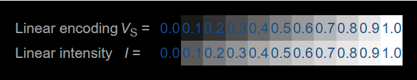
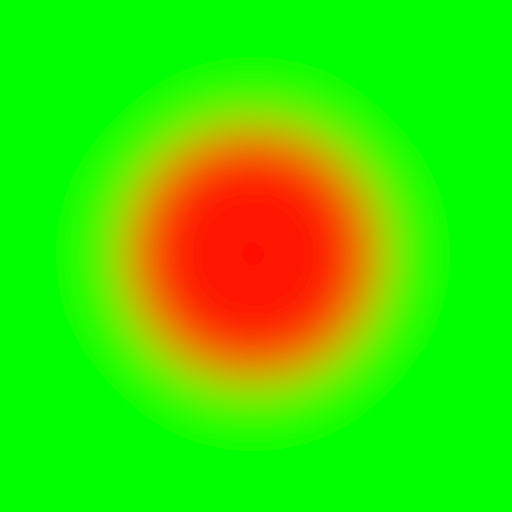

sRGB and gamma correction
Today, most images and monitors use the sRGB color space. It is convenient that they use the same color space, since it means that the RGB values from an image can be fed directly to the display. However, there is a downside to using sRGB which not enough people realize: sRGB encodes the RGB components in a nonlinear way to provide a set of colors that is perceptually uniform.

The fact that sRGB is a nonlinear color space means that adding or multiplying sRGB colors is wrong. This means that things like linear interpolation, fade-outs, and bilinear filtering are wrong when they are done on sRGB colors. They should be done only on linear sRGB color representations.
It is not always noticeable when sRGB colors are used incorrectly, but the effect is obvious in some edge cases. For example, consider this example where I placed a red circle onto a green background and applied a CSS blur filter:
If you think the blurred edges of the circle look too dark, you are right. When I make the same picture in GIMP, it looks like this:

Usually, the difference is more subtle. In general, images with correct gamma handling have softer shadows and less intensive highlights. For example, consider the following example from the “Gamma-correct lighting” article on Wolfire.com:
The following, more pronounced example is from the article about gamma correction on learnopengl.com:

Gamma correction
If we want to apply any transformation to an image in the sRGB color space, the colors should be converted to the linear sRGB color space before doing the transformation (and back to sRGB before displaying the transformed image). These conversions are known as gamma correction.
To convert a color from sRGB to linear sRGB we apply the conversion
where
This conversion should be done to each of the R, G, and B components. If there is an alpha component it should not be converted.
Before displaying the colors, we should convert the linear sRGB color back to a proper sRGB representation by applying the inverse transformation:
with
This is an odd transformation. It is chosen to be very close to the mapping but to be linear for very dark values. So so that . As a simplification or optimization, you could use this mapping as well, and get very close results (although the results might be off for small values).
If you have a graphics application and you’re not sure if it uses gamma correctly, I’d first suggest to investigate if you happen to use a library or framework that already handles gamma for you. In particular, OpenGL has support for sRGB as outlined in the article about gamma correction on learnopengl.com.
If you really need to do it yourself, I’d suggest to transform the input images to linear floating point values when you load them. Then, you perform one final conversion back to sRGB before displaying or saving the picture.